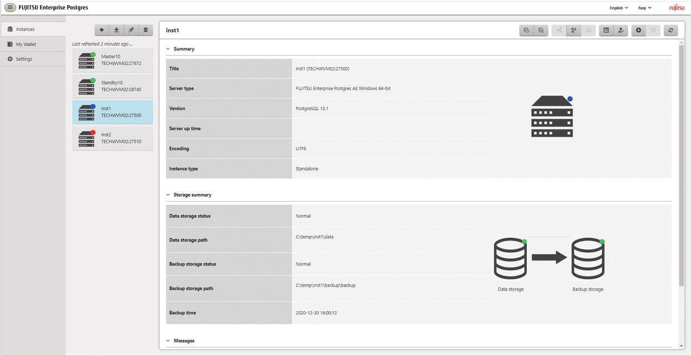

WebAdmin enables you to start or stop an instance and check its operating status.
Start an instance by using the [Instances] tab in WebAdmin.
is displayed when an instance is stopped.
To start a stopped instance, click .
Stop an instance by using the [Instances] tab in WebAdmin.
 is displayed when an instance is active.
is displayed when an instance is active.
To stop an active instance, click  .
.
Select the mode in which to stop the instance. The following describes the operations of the modes:
Stop mode | Connected clients | Backup being executed using the command |
|---|---|---|
Smart mode *1 | Waits for all connected clients to be disconnected. | Waits for backups being executed using the command to finish. |
Fast mode | Rolls back all transactions being executed and forcibly disconnects clients. | Terminates backups being executed using the command. |
Immediate mode | All server processes are terminated immediately. Crash recovery is executed the next time the instance is started. | |
Kill process mode | Send SIGKILL to the process and abort all active transactions. This will lead to a crash-recovery run at the next restart. | |
*1: When the processing to stop the instance in the Smart mode has started and you want to stop immediately, use the following procedure:
Restart the Web server feature of WebAdmin.
In the [Instances] tab, click .
In the [Instances] tab, click  , and select the Immediate mode to stop the instance.
, and select the Immediate mode to stop the instance.
Checking the operating status of an instance
You can check the operating status of an instance by using the [Instances] tab. The following indicators are used to show the status of a resource.
Status indicator | Explanation |
|---|---|
The resource is operating normally. | |
The resource is stopped. | |
There is an error in the resource. | |
An operation is in progress on this resource or the status is being checked. | |
The resource is not operating optimally and needs intervention. |
If an instance stops abnormally, remove the cause of the stoppage and start the instance by using WebAdmin.
Figure 2.1 Example of operating status indicators

Note
When operating WebAdmin, click to update the status. WebAdmin will reflect the latest status of the operation or the instance resources from the server.
If an error occurs while communicating with the server, there may be no response from WebAdmin. When this happens, close the browser and then log in again. If this does not resolve the issue, check the event log of the server and confirm whether a communication error has occurred.
The following message is output during startup of an instance when the startup process is operating normally, therefore, the user does not need to be aware of this message:
FATAL: the database system is starting up